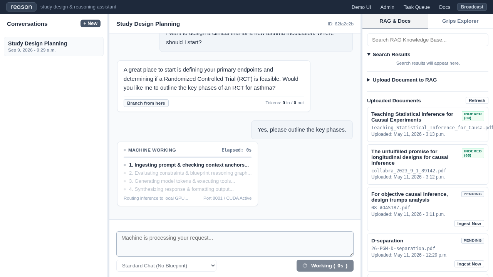

Demo UI - Empirical Research & Cognitive Workbench
The Demo UI (the “Reason” interface) provides an interactive, transparent workbench for exploring, inspecting, and evaluating Verbal’s multi-agent reasoning, retrieval-augmented generation (RAG), and conceptual knowledge systems. Rather than serving as an opaque conversational chatbot, it is engineered to expose the underlying cognitive machinery to experiment designers and researchers.
1. Purpose & Motivating Problem
Standard chat interfaces are designed for consumer interactions: they treat the AI as an opaque black box, enforce a single linear conversation history, hide retrieval context, and offer no visibility into internal reasoning steps or tool invocations.
In scientific workflows and experimental design, this lack of transparency is unacceptable:
Need for Provenance: Researchers must know precisely which document chunks or knowledge graph concepts were injected into the model’s context window.
Exploration of Alternative Reasoning Paths: Study design requires exploring multiple hypotheses. A linear chat history makes it difficult to backtrack and branch when an agent’s reasoning diverges or hits a dead end.
Visibility into Multi-Step Deliberation: Complex blueprints execute multiple discrete reasoning steps and call external tools (such as isolated code execution in the sandbox). Designers must be able to observe intermediate monologues and approve critical tool actions before execution.
The Demo UI addresses these needs through server-driven dynamic updates (HTMX and Datastar SSE), providing deep visibility into every stage of execution without requiring heavy client-side JavaScript applications.
Note
A Note on the Workbench Scope: The Demo UI is intentionally designed as an experimental workbench and evaluation surface rather than a polished consumer product. Its primary objective is to allow developers, domain experts, and evaluators to stress-test prompt blueprints, audit knowledge retrieval, branch conversations, and verify cognitive behaviors under realistic laboratory conditions.
2. Architecture & Mechanism
The Demo UI is built on standard Django templates augmented with HTMX for targeted DOM swaps and Datastar for real-time Server-Sent Events (SSE).
Core Functional Components
Main Chat & Multi-Turn Dialogue Canvas: * Renders conversational logs with rich Markdown formatting, syntax-highlighted code blocks, mathematical expressions, and auto-formatted JSON payloads. * Prompts can be submitted for standard direct inference or dispatched through configured Cognitive Blueprints.
Cognitive Blueprint Execution & Monologue Streaming: * Users can select any configured
CognitiveBlueprintfrom the blueprint drawer. * Execution is dispatched asynchronously to the background task queue viaverbal_tasks(metacognition.tasks.task_run_blueprint_async). * Progress is streamed to the browser via Datastar SSE from/api/meta/stream_blueprint/, displaying the agent’s internal monologue, intermediate steps, and final response in real time.Human-in-the-Loop Tool Approval: * When a blueprint step invokes a tool requiring confirmation (e.g. executing arbitrary Python code in the sandbox or modifying files), execution halts and renders an interactive approval prompt in the UI. * Users can inspect the tool parameters, approve execution, or abort the action.
Conversation Tree Branching: * Every message bubble in the history includes a “Branch” action. Clicking it invokes
views.branch_conversation, which forks the conversation tree at that exact historical log, duplicating upstream context into a new independent thread for testing alternative prompts or model parameters.Knowledge Management & Context Curation: * Upload research papers, PDFs, or notes directly through the interface. * Triggers asynchronous parsing (via Grobid or Docling) and vector embedding into PGVector. * Provides real-time token count calculations (
/context/tokens/) and snippet previews (/context/preview/) to prevent prompt budget overflows.Unified RAG & Grips Search: * The search panel queries both unstructured text chunks (PGVector) and structured conceptual ontology nodes (Grips) simultaneously using
unified_retrieve.Interactive Grips Knowledge Graph Explorer: * Browse hierarchical concept trees, expand parent-child relationships, inspect ontological claims, and trigger automated LLM stub fills for newly discovered concepts.
Workspace Artifact Downloader: * Artifacts and files generated during reasoning sessions (such as code written inside the Docker sandbox) are exposed for direct download via
/conversation/<id>/download/<path>.
Visual Interface Walkthrough
1. Main Chat Interface
The main workspace presents conversation history on the left and contextual tooling on the right:

2. Prompt Submission & Blueprint Selection
Select an active cognitive blueprint, configure context attachments, and submit an experimental prompt:

3. Real-Time Streaming & Intermediate Deliberation
Asynchronous tasks stream token-by-token output, reasoning monologues, and tool outputs directly into the conversational card:
{kind=link}

4. Knowledge Base & Document Curation
Upload, monitor, and inspect background documents and their vector ingestion status:

5. Grips Conceptual Explorer
Navigate conceptual domains, expand sub-concepts, and trigger recursive stub-filling:

Empirical Rigor Trials
To ensure the interface behaves correctly across complex scenarios, four comprehensive automated trials are maintained under demo_ui/demo_ui_trials/:
Trial 1: Document Ingestion & Context Curation: Validates PDF parsing, chunking, embedding, and token budgeting.
Trial 2: Careful Literature Extraction: Verifies citation graph extraction, author parsing, and TEI XML structure validation.
Trial 3: Multistep Blueprint & Tool Execution: Audits asynchronous task dispatch, Datastar SSE streaming, and human-in-the-loop tool approval gates.
Trial 4: Conversation Branching & Grips Expansion: Tests tree-based conversation forking, concept node stub fills, and graph query consistency.
For detailed reports and automated doctests, see Demo UI Empirical Trials & Verification Reports.
3. Observability & Health Signals
To monitor the health and behavior of the Demo UI:
HTMX Dynamic Swaps: * Inspect the browser developer console and network tab. Successful HTMX interactions return HTTP 200 status codes with clean HTML partials.
Datastar SSE Streaming Activity: * Active blueprint executions maintain an open HTTP connection to
/api/meta/stream_blueprint/?run_id=<run_id>. * In the UI, the execution card displays an animated “Dispatched” badge and updates the#monologue-streamcontainer as steps progress.Task Worker Synchronization: * Monitor the
runtaskworkerconsole log. When a blueprint is dispatched from the UI, the worker logs task pickup, node transitions, and completion.Database State in Django Admin: * Check LLM API > Conversations and Prompt Response Logs to inspect raw prompt payloads, retrieved context tokens, and model response metrics.
4. Diagnostic Tips & Common Failure Modes
Blueprint Execution Appears Stalled: If a blueprint card remains on “Dispatched” or “Executing” indefinitely: 1. Verify that the
runtaskworkerbackground process is running. 2. Check if the blueprint reached a tool step requiring human confirmation; the approval container (#tool-approval-container) must be confirmed by the user before the task can resume. 3. Inspect the inference server (vLLM, Ollama, or PyTorch) to ensure it is not blocked or generating an excessively long response.Stream Connection Interrupted: If the network connection drops during SSE streaming, Datastar will attempt to reconnect. If reconnection fails, simply refresh the browser tab; completed intermediate steps and logs are saved in PostgreSQL and will render upon reload.
Prompt Token Budget Exceeded: When attaching multiple large RAG chunks or extensive conversation histories, local SLMs with small context windows (e.g. 4k or 8k tokens) may truncate prompt instructions or fail to generate valid responses. Use the token counter panel (
/context/tokens/) to review total token counts before dispatching.Lost in Conversation Branches: Because branching creates an entirely new
Conversationinstance, the conversation title will match the branched point. Check the URL query parameter?conversation_id=<uuid>and the conversation sidebar list to ensure you are viewing the intended branch.
Views Reference
- demo_ui.views.branch_conversation(request, log_id)[source]
HTMX endpoint to fork a conversation DAG from a specific assistant response, copying all content back to the start.
- demo_ui.views.calculate_context_tokens(request)[source]
JSON helper endpoint to calculate token counts for an array of dropped context items.
- demo_ui.views.download_file(request, conversation_id, filename)[source]
Secure endpoint to download a generated file from a conversation workspace.
- demo_ui.views.fill_grips_stub(request, concept_id)[source]
Triggers autonomous stub elaboration for a specific ConceptNode.
- demo_ui.views.get_conversation(request, conversation_id)[source]
HTMX endpoint to load an existing conversation’s history.
- demo_ui.views.grips_concept_children(request, concept_id)[source]
HTMX endpoint to lazily load children of a ConceptNode in the hierarchy.
- demo_ui.views.list_documents(request)[source]
HTMX endpoint to render the recent uploaded documents list with accurate status.
- demo_ui.views.preview_context_item(request)[source]
HTMX endpoint returning content preview and estimated token count for a dropped item.
- demo_ui.views.search_knowledge_base(request)[source]
HTMX endpoint to perform a unified search across RAG and Grips.
- demo_ui.views.send_message(request)[source]
HTMX endpoint to process a prompt, run AI/Blueprint, and return the new bubbles.